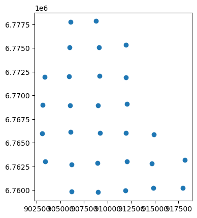
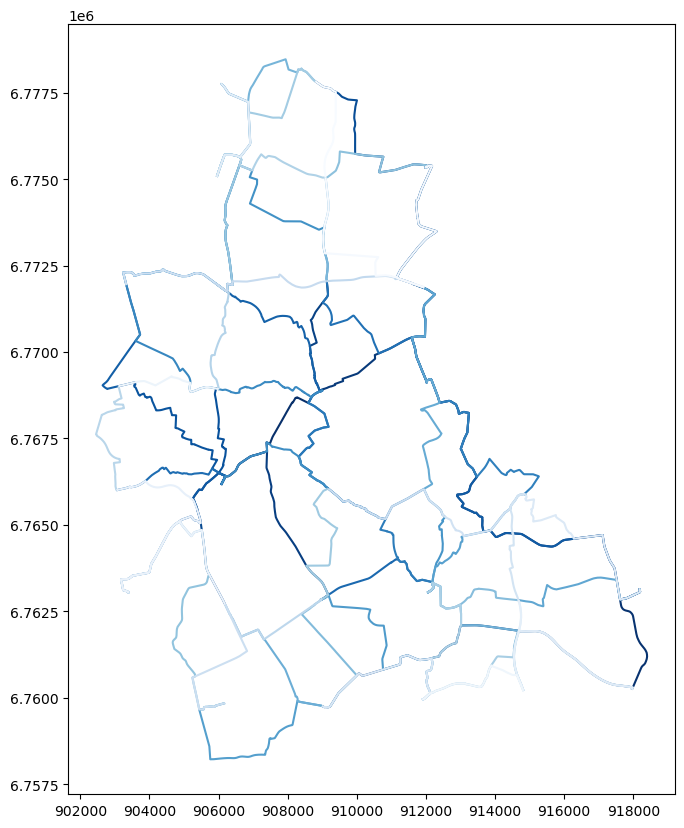

Note
This page was generated from usage/GrowBikeMVP.ipynb.
Interactive online version: 
MVP for GrowBikeNet implementation#
[1]:
# import libraries
import osmnx as ox
# import functions
from src.functions import *
# import visualization
from src.visualizations import *
User Input:#
[2]:
city_name = 'Oelde'
seed_point_spacing = 3000 # distance between seed points, in meters
orig_crs = '4326'
proj_crs = '3857'
seed_point_delta = 500 # maximal distance between seed point and actual point in OSM data, in meters
method = "betweenness_centrality" # specify method via user input/config file later
Data from OSM#
[3]:
# fetch street network data from osmnx
g = ox.graph_from_place(
city_name, network_type='all'
)
g_undir = g.to_undirected().copy() # convert to undirected (dropping OSMnx keys!)
# # plausibility check
# ox.plot_graph(g, figsize=(10, 10))
Street network data#
[4]:
# export osmnx data to gdfs
nodes, edges = ox.graph_to_gdfs(
g_undir,
nodes=True,
edges=True,
node_geometry=True,
fill_edge_geometry=True
)
# save "original" graph data (in orig_crs)
nodes.to_file("nodes.gpkg", driver='GPKG')
edges.to_file("edges.gpkg", driver='GPKG')
# replace after dropping edges with key = 1
edges = edges.loc[:,:,0].copy()
# this also means we are dropping the "key" level from edge index (u,v,key becomes: u,v)
# project geometries of nodes and edges
edges = edges.to_crs(proj_crs)
nodes = nodes.to_crs(proj_crs)
# add osm ID as column to node gdf
nodes["osmid"] = nodes.index
Seed points#
[5]:
seed_points = get_seed_points(edges, proj_crs, seed_point_spacing)
# plausibility check
# seed_points.plot()
Snap Seed points to OSM nodes#
[6]:
seed_points_snapped = snap_seed_points(seed_points, nodes)
seed_points_snapped = filter_seed_points(seed_points_snapped, seed_point_delta)
[7]:
# plausibility check
seed_points_snapped.plot()
[7]:
<Axes: >

Greedy triangulation#
[8]:
# create df with all potential edges in triangulation
df = create_potential_triangulation(seed_points_snapped)
[9]:
# filter edges that intersect with existing edges
edge_list = filter_triangulation(df)
[10]:
# make graph object from edge list
A = nx.Graph()
A.add_nodes_from(seed_points_snapped.index)
A.add_edges_from(edge_list)
[11]:
# add betweenness attributes to edges
bc_values = nx.edge_betweenness_centrality(A, normalized=True)
nx.set_edge_attributes(A, bc_values, name='betweenness_centrality')
[12]:
# # commenting this out for now since we don't have ranking by closeness implemented yet
# # step 5: add closeness attributes to nodes
# closeness = nx.closeness_centrality(A)
# nx.set_node_attributes(A, closeness, name='closeness_centrality')
[13]:
# step 6: export attributes to gdfs
# as above - commenting out because closeness not yet implemented
# a_nodes = pd.DataFrame.from_dict(
# nx.get_node_attributes(
# G=A,
# name="closeness_centrality"),
# orient="index",
# columns = ["closeness_centrality"]
# )
# a_nodes["node"] = a_nodes.index
# a_nodes.reset_index(drop=True, inplace=True)
# create dataframe and add method as edge attribute
a_edges = df_from_graph(A, method)
# rank edges by specified method
a_edges = rank_df(a_edges, method)
[14]:
# map each abstract edge to a merged geometry of corresponding osmnx edges (routed on g_undir)
a_edges = add_path_to_df(a_edges, edges, g_undir)
# Step 8b: get "routed" geometry (LineString) for each abstract edge (row)
a_edges = create_gdf_with_geoms(a_edges, edges)
[15]:
# plausibility check: now a_edges contains all of our results we wanted to get,
# will be saving a_edges to file, then plotting.
a_edges.head()
[15]:
| betweenness_centrality | source | target | ordering | path_nodes | path_edges | geometry | |
|---|---|---|---|---|---|---|---|
| 0 | 0.112389 | 9575999249 | 414054457 | 0 | [9575999249, 9575999244, 414209565, 395681350,... | [(9575999244, 9575999249), (414209565, 9575999... | LINESTRING (906073.975 6766159.326, 906111.768... |
| 1 | 0.087850 | 286933756 | 482842756 | 1 | [286933756, 281842218, 482842724, 482842730, 1... | [(281842218, 286933756), (281842218, 482842724... | LINESTRING (918177.476 6763168.669, 918194.029... |
| 2 | 0.085573 | 6765749025 | 482842756 | 2 | [6765749025, 6765749026, 6765749024, 687382266... | [(6765749025, 6765749026), (6765749024, 676574... | LINESTRING (918177.476 6763168.669, 918194.029... |
| 3 | 0.081643 | 414054457 | 8158663697 | 3 | [414054457, 414054471, 414054468, 414054465, 4... | [(414054457, 414054471), (414054468, 414054471... | LINESTRING (909000.475 6768911.364, 909006.074... |
| 4 | 0.078995 | 9575999249 | 9501048789 | 4 | [9575999249, 9575999244, 414209565, 319972186,... | [(9575999244, 9575999249), (414209565, 9575999... | LINESTRING (908952.329 6762870.197, 908976.931... |
[16]:
fig, ax = plt.subplots(1,1, figsize=(10,10))
a_edges.plot(ax=ax, column="ordering", cmap="Blues_r")
#seed_points_snapped.plot(ax=ax, color="grey")
[16]:
<Axes: >

[17]:
# save to file
a_edges.to_file("a_edges.gpkg", driver="GPKG")
Visualization#
[18]:
# create directories
os.makedirs("./results/", exist_ok=True)
os.makedirs("./results/plots/", exist_ok=True)
os.makedirs("./results/plots/video/", exist_ok=True)
[19]:
# read in file to plot
routed_edges_gdf = gpd.read_file("a_edges.gpkg")
[20]:
# viz/plot settings (move to config file later)
# define color palette (from Michael's project: https://github.com/mszell/bikenwgrowth/blob/main/parameters/parameters.py)
streetcolor = "#999999"
edgecolor = "#0EB6D2"
seedcolor = "#ff7338"
# define linewidths
lws = {
"street": 0.75,
"bike": 2
}
[21]:
create_plots(routed_edges_gdf,seed_points_snapped,streetcolor,edgecolor,seedcolor,lws)
[22]:
make_video(
img_folder_name="./results/plots/",
fps = 1
)